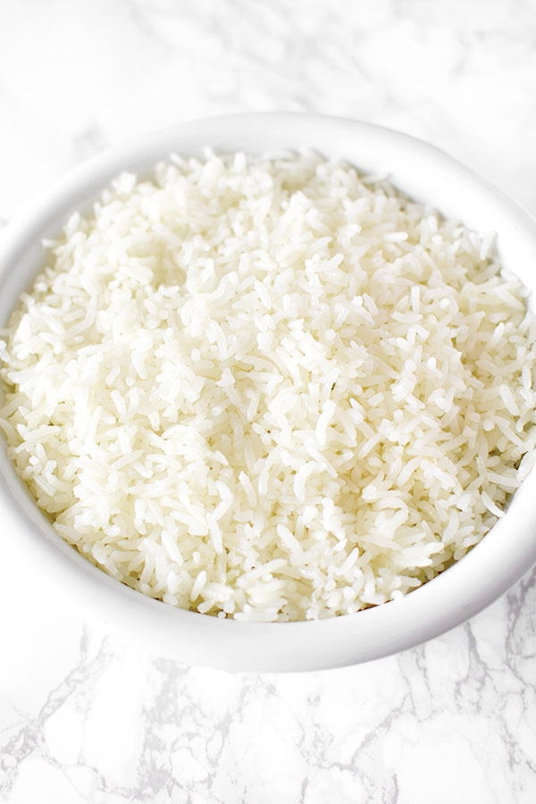
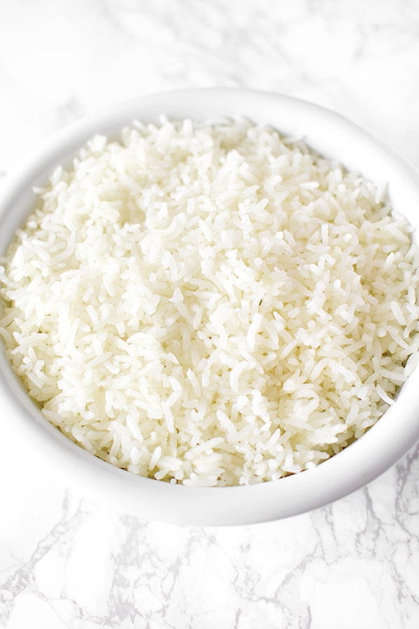

Meet the Team
The passionate people behind Amala Ibadan

Mrs. Salako
General Manager

Mr. Johnson
Head of HR

Miss Titi
Regional Manager, Lagos

Mr. Dapo
Regional Manager, Ibadan

Chef Ayo
Executive Chef
Authenticity, Culture, and Flavor — All in One Bite.
Amala Ibadan was founded with a passion for preserving the soul of Yoruba cuisine. From humble beginnings, we’ve grown into a trusted name where quality meets culture.
Every dish we serve is crafted with intention — from fresh ingredients to time-tested techniques passed down through generations. We don’t just serve food; we serve a story, a tradition, and a feeling of home.
Whether you dine with us or order online, our goal remains the same: to deliver warmth, excellence, and a taste of authenticity.
Speak With UsOur owners, fueled by passion and unwavering determination, transformed a simple idea into a thriving success. Through hard work and resilience, they overcame challenges and built a business that inspires growth and excellence.
Our workers are the driving force behind everything we achieve. With dedication, skill, and teamwork, they turn challenges into opportunities, ensuring the highest standards of excellence. Their commitment and hard work are the foundation of our continued success.
The passionate people behind Amala Ibadan
General Manager
Head of HR
Regional Manager, Lagos
Regional Manager, Ibadan
Executive Chef
We bring your events to life with professional planning, tasteful decoration, and exceptional catering. Whether you're organizing a wedding, birthday, corporate function, or intimate dinner, our team ensures a seamless and unforgettable experience.
From the first idea to the final dish, we work with you every step of the way — handling venue setup, guest coordination, menu customization, and on-site service so you can enjoy every moment.
View All ServicesFrom corporate catering to wedding feasts, Amala Ibadan has delivered unforgettable culinary experiences.
 

April 2024 – Lekki, Lagos
We brought authentic Nigerian cuisine to over 500 guests with premium service and mouthwatering taste.
January 2024 – Victoria Island
We served a tailored buffet menu for executives at a 2-day retreat with rave reviews.
December 2023 – Ibadan
Our team curated a live cooking station with swallows and soups for over 300 guests.
October 2023 – UNILAG
A rich showcase of traditional dishes for students and staff at the university’s annual event.
Amala is more than just a dish — it’s a cherished staple of Yoruba cuisine and a symbol of Nigeria’s rich culinary heritage. Made from yam or cassava flour, it’s known for its smooth texture and earthy flavor.
The preparation of Amala is a skillful art, requiring patience and technique. Stirred to perfection, its elastic, velvety form makes it a favorite when paired with soups like Efo Riro or Ogbono.
At Amala Ibadan, we honor this tradition by using only the finest ingredients and time-tested methods. Every bite is a celebration of culture, flavor, and community.